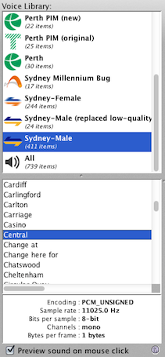
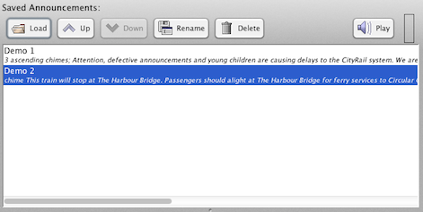

Instructions
Voice Library

Click on a voice library to get started. The voice library you choose will determine the sounds used for announcements you create. To add a new voice library, copy a folder or .JAR file to the DVA program folder. A list of sounds in the voice library is shown underneath. You can preview a sound by clicking on it, or double click to add it to the current announcement.
Saved Announcements
This list contains announcements you create and save. To load an announcement for editing, select it and press Load. Announcements can be moved up or down the list by pressing the Up or Down buttons. Press Rename to change the name of the selected announcement, or Delete to remove it from the list. When renaming an announcement, if you give it the name of an already existing announcement, you will be asked whether to overwrite it. A saved announcement can be played by pressing the Play button, which changes to the Stop button while an announcement is playing. The active voice library when an announcement was saved is remembered, and will be used to play the announcement.
Current Announcement

Press the New button to create a blank announcement. To add new sounds to the current announcement, double-click them in the voice library or start typing. As you type, the list of sounds in the active voice library will be filtered to help you find a suitable sound. You can navigate the filtered list using Page Up or Page Down or Shift + Up/Down arrows, then add the highlighted sound to the current announcement by pressing Shift + Right arrow, or Tab. When you are done editing, click the Save button to add it to the Saved Announcements list. You can also export the announcement as a single .WAV file by clicking the Export button (experimental feature).
As you edit the announcement, the indicator will change between green and red, to show you whether the current announcement can be played with the sounds available. A pink highlight in the editor will also show you the location of any error found.
Some voice libraries (e.g. the Sydney ones) contain two sets of sounds with different voice inflections. If available, these will be shown underneath the sound list. The inflection used in an announcement is automatically determined from the sentence structure and punctuation, but can be overridden by preceding the station or sound bite name with a backtick (`) character to force a falling inflection, or a caret (^) to force a rising inflection. Example: "The train on platform number 1 goes to ^Central. First stop `Central only.